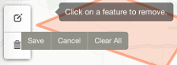

Plotter documentation
Introduction
Plotter is a web application running in the browser. It allows you to create and edit map features in the form of lines, polygons, circles* and markers and save the results as a GeoJSON file. The saved file is downloaded to your device - there is no data saved in the cloud etc. Previously saved files can also be loaded back for further editing. These facilities are a very simplified form of those found in Geographical Information Systems (GIS). Files saved by this application can be loaded into GIS applications for further editing.
Spatially referenced vector data represent different features on the surface of the earth as discrete points, lines, and polygons. Points represent discrete locations (e.g. CCTV cameras, bus stops), lines represent linear features (e.g. street, rivers), and polygons represent areas (e.g. borough boundaries, lakes). These features are overlayed on top of a base map - a representation of the world drawn to various scales which helps the viewer orientate and understand where those features are located.
* The GeoJSON specification does not contain representations for circles. However, as circles can be useful to show buffers around places etc. we have decided to include them in this app. They are represented in the GeoJSON as a point with the radius stored as a property value. If you load GeoJSON created by this app which contains circles into other apps, they will be represented by a standard point located at the centre of the circles.
Familiarisation
When the application loads, the base map displayed is low detail grey-scale which highlights town and city names, initially positioned to show the borough of Trafford. (To further assist with orientation of this particular area, the boundary of each of the ten Local Authorities which make up the Greater Manchester region has been provided as an overlay layer which can be toggled on/off using the layer control show in the diagram below.
NOTE: Although this is an example of a map feature, the layer is not editable as it is provided simply as a guide and will not appear in the output saved from the app.)
The top-left corner contains the map controls. The first zooms the map to your approximate location if you have a capable device and allow this feature (i.e. you will be asked if you are happy to share your location). The second item is a tool to show areas of reachability based on time or distance for different modes of travel using the openrouteservice isochrones API. You can find out more about reachability in our Medium article "Out of reach? Introducing our distance and travel time plugin". Although this tool draws features on the map, they are not savable or editable like the ones you can create using the draw tools. This is because they are calculated features based on travel networks such as roads, footpaths etc. and so cannot be editable.
The third item is the layer control which allows you choose the map layers you wish to see. Selecting this control will reveal a choice of base maps giving different types of information and area details as well as the option to hide or show the Local Authority boundaries and name labels. The choice of base maps includes a satellite view and the option to not display a base map at all. The choices you make within the layer control do not affect the map features you create or the data saved by the application.
The tools for drawing and editing map features are located in the bottom-left corner. The six buttons are split into two groups; the first four are the drawing tools - "line", "polygon", "circle" and "marker" whilst the last two are "edit" and "delete".
Finally, the top-right corner displays the input/output buttons Load and Save along with the Docs button to display this guide.
You can zoom and move (pan) the map in a variety of ways depending on the device you are using. For mobile/touch devices you can zoom and pan by using the familiar pinch-to-zoom and touch-drag gestures. For desktop browsers you can zoom using the + and − keys, using a scroll wheel mouse, double-clicking on the map (zoom in)/holding shift while double-clicking (zoom out), click and drag a box (zoom in only) or via trackpad gestures on enabled devices. To pan on desktop browsers simply click and drag using either a mouse or trackpad.
Drawing and editing
The feature drawing tools are very simple to use, with tooltip instructions to assist you. The line and polygon tools work in the same way; you select the tool and then choose a starting location on the map to begin. After the first point is created, subsequent points can be added by choosing the location on the map, or removed by choosing the "Delete last point" option that appears next to the drawing tool. When you want to finish the feature you are drawing, select either the last point or the "Finish" option next to the drawing tool. The circle tool starts off in the same way, you choose a starting location for the centre of the circle. Once this has been chosen the second and final action is to drag the circle to the desired size. You will notice with the line, polygon and circle tools that as you draw, the dimensions of the features will be displayed, allowing you to create accurately sized features. Finally, the marker drawing tool simply requires you to choose a point on the map and the marker will be displayed. All four drawing tools offer the option to cancel drawing once they have been selected by choosing "Cancel" next to the relevant tool. You can also zoom in and out of the map as you draw, however you cannot pan the map whilst drawing as any click or touch actions on the base map result in an aspect of the feature being created.
Whenever a feature has been drawn you will be given the option to give it a label. This can be anything you wish in order to associate information with the feature. A request window will appear asking if you want to provide a label. If so, you simply enter the information in the box provided, otherwise choose cancel. In addition to the optional label, each feature is automatically given a number. The number plus any label is displayed in a tooltip when you interact with the feature. This information, along with any other property values that a feature may have, are also displayed in a panel under the main application buttons in the top-right corner of the screen when you select a feature. The feature will also be highlighted to show it has been selected.
Editing features is performed by selecting the "edit" tool, which changes all feature lines into dashed lines, provides square handles on all lines and puts a dashed line around any markers. You can move markers simply by dragging them to the desired location, other features can be amended using the handles. Once you are happy with your changes, select the "Save" button next to the edit tool, (not the main application Save button). Choosing the "Cancel" button next to the edit tool reverts your features back to the state they were in before you performed any edits.
You can also delete any unwanted features. Select the "delete" tool in the drawing toolbox and then select a feature to delete it, or choose the "Clear All" option to delete everything. Once you have removed the desired features you need to choose the "Save" button next to the delete tool. Again, it's important not to confuse this button with the main application Save button. If you change your mind about the features you have deleted, choosing the "Cancel" button will undo any changes.
Loading data
The main application Load button provides the ability to load GeoJSON data in three different ways:
1. from your device or network, 2. via a URL or 3. by pasting the code directly into the box.
Either of these methods results in the map features represented in the file being drawn. The features are editable, just as if you had drawn them using the feature drawing tools. Most valid GeoJSON files can be loaded (with some exceptions due to size or complexity), not just those created using this application. If the data couldn't be loaded the application will try to inform you as to why.
To load a GeoJSON file stored locally, (i.e. on the device or network you are connected to), select the Choose a file option and then choose the file using the selection window.
The main things to bear in mind when loading data via a URL are: the server hosting the data must be secure, must support cross-origin requests (i.e. requests from other domains e.g. https://www.trafforddatalab.io requests data from https://www.anotherdomain.com) and you must specify the full URL including the https://.
To paste the GeoJSON code directly you will first need to open the file in any application that allows plain text content to be viewed, such as a text editor or even another another browser window/tab. Once you have the content of the file displayed, simply copy the whole content and paste it into the box provided in the Load interface. Be sure to include the first "{" and last "}" characters otherwise you will receive an error message.
Saving data
The main application Save button creates a GeoJSON representation of the map features you have created (i.e. excluding the Local Authority boundaries and base map) and attempts to create a file named "user_map_data.geojson". Depending on your operating system and web browser you will either; have the file automatically downloaded for you, be prompted for where you want to save the file, or see the contents of the file displayed in a new browser window/tab.
An example
The following is an example GeoJSON output from the application.
{
"type": "FeatureCollection",
"features": [
{
"type": "Feature",
"properties": {
"featureNum": 1,
"featureAlias": "Trafford Data Lab work here!"
},
"geometry": {
"type": "Point",
"coordinates": [
-2.330545,
53.42184
]
}
}
]
}
To load this data back into the application as a test follow these steps:
- copy the code above
- open the application
- select Load
- paste the code into the box provided
- select OK to see the result on the map
Demonstrations
Loading data via URL | Drawing a buffer | Creating a marker | Editing features
Credits
Plotter was created using the following:
- Leaflet.js - (C) Vladimir Agafonkin (LICENCE)
- Leaflet.Draw plugin - (C) Jacob Toye (LICENCE)
- Leaflet.Locate plugin - (C) Dominik Moritz (LICENCE)
- Alertify.js - (C) Mohammad Younes (LICENCE)
- Fontawesome - (C) Fonticons, Inc. All rights reserved (LICENCE)
- All other code by Trafford Data Lab (LICENCE)